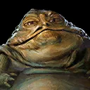
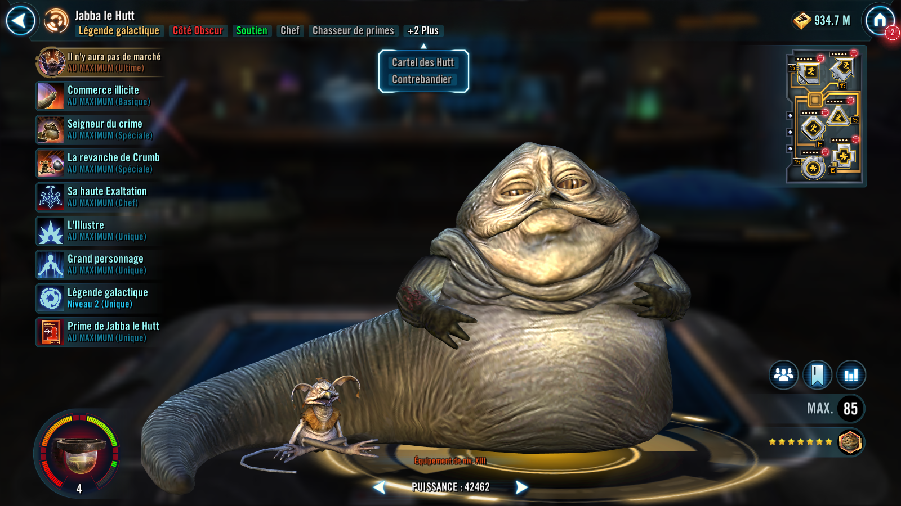
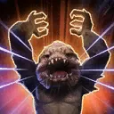
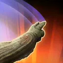
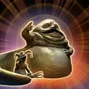
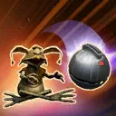
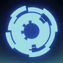
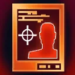

Jabba the Hutt
A ruthless crime boss who exerts his influence on others to control the flow of battle to support his criminal underworld and Hutt Cartel enforcers

A ruthless crime boss who exerts his influence on others to control the flow of battle to support his criminal underworld and Hutt Cartel enforcers


Requires 100% Ultimate Charge to activate.
Ultimate Charge: Jabba the Hutt gains 3% Ultimate Charge whenever an ally with My Kind of Scum starts their turn or uses a Special ability. If an ally with My Kind of Scum defeats an enemy, or Jabba uses his Basic ability during his turn, he gains 6% Ultimate Charge.
Jabba the Hutt instantly defeats target enemy (excluding raid bosses and Galactic Legends). Enemies defeated by this ability can't be revived.
Bounty Hunter, Hutt Cartel, and Smuggler allies recover 100% Health and Protection. Hutt Cartel allies gain 50% Turn Meter.
There Will Be No Bargain on Galactic Legends: Dispel buffs, inflict Armor Shred until the end of the encounter, deal true damage to target enemy, and Stun other enemies for 1 turn, which can't be resisted.
There Will Be No Bargain on raid bosses: Deal true damage to target enemy equal to 30% of Jabba's Max Health 5 times and Stun all other enemies for 1 turn, which can't be resisted.
This ability can't be countered or evaded.

Call the other weakest Hutt Cartel ally to assist, dealing 10% more damage for each active Hutt Cartel ally. Bounty Hunter and Smuggler allies gain Protection Up (10%) for 2 turns.
During Jabba's turn, he inflicts Blind on target enemy, gains 6% Ultimate Charge, and the weakest Hutt Cartel ally recovers 30% Protection. Hutt Cartel allies gain Protection Up (30%) for 2 turns.

Dispel all debuffs on allies and inflict Speed Down for 2 turns on all enemies. Other Bounty Hunter, Hutt Cartel, and Smuggler allies gain Hired Muscle for 2 turns, which can't be copied.
Hired Muscle: +30% Tenacity; immune to Daze and Fear
Hired Muscle provides different benefits based on a character's role:
- Attackers: Once per turn, when another ally uses an ability, assist dealing 70% less damage
- Tanks: Immune to critical hits
- Healers and Supports: On attack, allies recover 10% Health and Protection
When Hired Muscle expires, it provides different benefits based on a character's faction:
- Bounty Hunter: Gain Defense Penetration Up for 2 turns
- Smuggler: Gain Speed Up for 2 turns
- Hutt Cartel: Gain Advantage for 2 turns

Dispel all buffs, deal Special damage, and inflict Buff Immunity on target enemy for 2 turns, which can't be dispelled.
Inflict a Thermal Detonator on all enemies for 2 turns. Inflict an additional Thermal Detonator on all enemies for 2 turns for every 20% Ultimate Charge Jabba the Hutt has. Whenever a Thermal Detonator from this ability expires, all Bounty Hunter, Hutt Cartel, and Smuggler allies gain 2% Mastery until the end of the encounter. This ability can't be resisted.
Bounty Hunter, Hutt Cartel, and Smuggler allies have +30 Speed, +30% Mastery, and +30% Max Health. Damage Hutt Cartel allies receive is decreased by 30%
At the start of battle, other Hutt Cartel allies gain a stack of My Kind of Scum for each Bounty Hunter, Hutt Cartel, and Smuggler ally until the end of the battle, which can't be copied, dispelled, or prevented. Jabba the Hutt is immune to taunt effects and can't be targeted during enemy turns while an ally with My Kind of Scum is present.
Jabba the Hutt gains 3% Ultimate Charge whenever an ally with My Kind of Scum starts their turn or uses a Special ability. If an ally with My Kind of Scum defeats an enemy, Jabba the Hutt gains 6% Ultimate Charge.
While enemies are inflicted with Thermal Detonator, their Health and Protection recovery effects are reduced by 50%.
At the start of each encounter after the first, Bounty Hunter, Hutt Cartel, and Smuggler allies gain Critical Damage Up, Damage Immunity, and Offense Up for 2 turns, which can't be copied, dispelled, or prevented.
When Jabba the Hutt is in the Leader slot, the following Contract is active:
Contract: While buffed with My Kind of Scum, deal damage with an attack to enemies with Thermal Detonators 20 times. Enemies must be debuffed with Thermal Detonators before the start of an attack to count progress. (Only Bounty Hunter, Hutt Cartel, and Smuggler allies can contribute to the Contract.)
During raids, this contract is fulfilled immediately at the start of battle.
Reward: All Bounty Hunter allies have their payouts activated, and all Bounty Hunter, Hutt Cartel, and Smuggler allies gain 25% Defense Penetration, Offense, and Potency. Allies with My Kind of Scum have +55% Mastery for each stack and recover 20% Protection at the start of their turn.
At the start of each encounter, Hutt Cartel allies have their cooldowns reset. Bounty Hunter, Hutt Cartel, and Smuggler allies are revived and recover 60% Health and Protection.
Jabba the Hutt ignores Taunt effects during his turn. At the start of his turn, he dispels Stealth from all enemies. Whenever a Hutt Cartel ally is Stunned, it is dispelled and they gain Offense Up for 2 turns.
If Jabba the Hutt is not in the allied Leader slot, allies can't gain bonus Turn Meter.
If Jabba the Hutt is in the allied Leader slot, whenever an enemy with less than 100% Turn Meter gains bonus Turn Meter, Hutt Cartel allies gain 7% Turn Meter (limit once per turn). Whenever a Hutt Cartel ally loses Turn Meter, they gain Bonus Protection (20%, stacking) until the start of their next turn.
This character can't be used in the ally slot or with another large character and summons are prevented for allies.

This unit takes reduced damage from percent Health damage effects and massive damage effects. They take massive damage from destroy effects (excludes raid bosses) and are immune to stun effects.
This unit has +10% Max Health and Max Protection per Relic Amplifier level, and damage they receive is decreased by 30%.

Whenever Jabba the Hutt receives Rewards from a Contract, he also gains the following Payout. (Contracts are granted by certain Bounty Hunter Leader abilities.)
Payout: Jabba the Hutt gains 40% Mastery and all his Ultimate Charge gains are doubled for the rest of the battle.